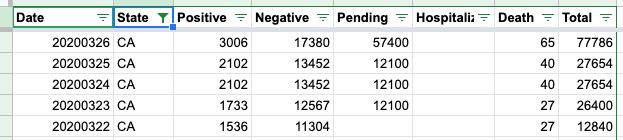

California issue
California seems to have an artifact where the data from the previous day shows up in the afternoon (as today), then it gets updated later at night. Probably an artifact of the scraping? So right now there is:
{"date":20200325,"state":"CA","positive":2102,"negative":13452,"pending":12100,"hospitalized":null,"death":40,"total":27654,"dateChecked":"2020-03-25T20:00:00Z","totalTestResults":15554,"deathIncrease":0,"hospitalizedIncrease":0,"negativeIncrease":0,"positiveIncrease":0,"totalTestResultsIncrease":0},
{"date":20200324,"state":"CA","positive":2102,"negative":13452,"pending":12100,"hospitalized":null,"death":40,"total":27654,"dateChecked":"2020-03-24T20:00:00Z","totalTestResults":15554,"deathIncrease":13,"hospitalizedIncrease":0,"negativeIncrease":885,"positiveIncrease":369,"totalTestResultsIncrease":1254},
It seems like this row should be left out because it clearly hasn’t been filled in yet.
Comments
I’m moving this over to general issues. My understanding is that CA updated numbers late. It happened after the 4PM release. I think there’s an effort to fix this in the raw spreadsheets.
@webmasterkai sounds good. let me know if you know where in the codebase the scraping / issue might be. I would be happy to patch it.
Yup, our numbers lock around 4pm ET. California always flies afterwards. But they’ve been extremely irregular with those updates. We hope they’ll get more standard in their reporting.
On Mar 25, 2020, at 6:10 PM, Micah Chambers notifications@github.com wrote:
California seems to have an artifact where the data from the previous day shows up in the afternoon (as today), then it gets updated later at night. Probably an artifact of the scraping? So right now there is:
{“date”:20200325,“state”:“CA”,“positive”:2102,“negative”:13452,“pending”:12100,“hospitalized”:null,“death”:40,“total”:27654,“dateChecked”:“2020-03-25T20:00:00Z”,“totalTestResults”:15554,“deathIncrease”:0,“hospitalizedIncrease”:0,“negativeIncrease”:0,“positiveIncrease”:0,“totalTestResultsIncrease”:0}, {“date”:20200324,“state”:“CA”,“positive”:2102,“negative”:13452,“pending”:12100,“hospitalized”:null,“death”:40,“total”:27654,“dateChecked”:“2020-03-24T20:00:00Z”,“totalTestResults”:15554,“deathIncrease”:13,“hospitalizedIncrease”:0,“negativeIncrease”:885,“positiveIncrease”:369,“totalTestResultsIncrease”:1254}, It seems like this row should be left out because it clearly hasn’t been filled in yet.
— You are receiving this because you are subscribed to this thread. Reply to this email directly, view it on GitHub, or unsubscribe.
Whats weird as well is that the states API shows the correct value:
{"state":"CA","positive":2588,"positiveScore":1,"negativeScore":1,"negativeRegularScore":1,"commercialScore":0,"grade":"B","score":3,"negative":15741,"pending":48600,"hospitalized":null,"death":53,"total":66929,"lastUpdateEt":"3/24 17:00","checkTimeEt":"3/25 19:36","dateModified":"2020-03-24T21:00:00Z","dateChecked":"2020-03-25T23:36:00Z","totalTestResults":18329},{"state":"CO","positive":912,"positiveScore":1,"negativeScore":1,"negativeRegularScore":1,"commercialScore":1,"grade":"A","score":4,"negative":6789,"pending":null,"hospitalized":84,"death":11,"total":7701,"lastUpdateEt":"3/24 18:00","checkTimeEt":"3/25 14:58","dateModified":"2020-03-24T22:00:00Z","dateChecked":"2020-03-25T18:58:00Z","totalTestResults":7701},
But the states daily is still out of date :(
Yes - California has struggled with publishing current data; for an entire day, they reported nothing. 
As for the API, I am not sure why that would report anything different.
Hi, @micahcc, I’m moving this over to the API folks.